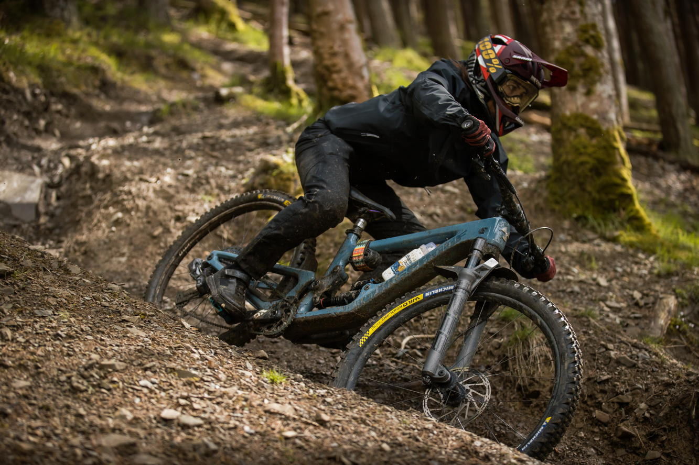
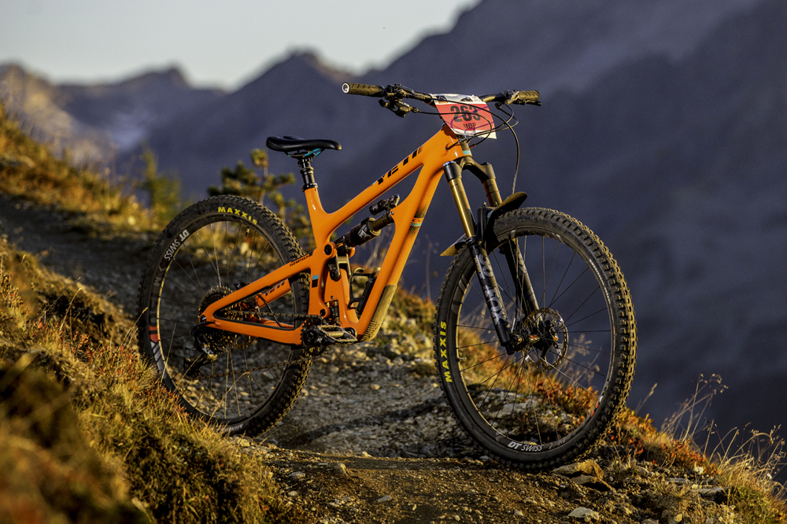
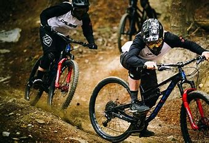

Una bicicleta de enduro es un tipo de bicicleta de montaña diseñada para competiciones y recorridos agresivos en terrenos técnicos y exigentes. Estas bicicletas están diseñadas para subir eficientemente y descender con confianza y velocidad, tiene características tales como:
| ·Suspensión
delantera y trasera de largo
recorrido para absorber los impactos en descensos pronunciados ·Geometría agresiva que proporciona estabilidad y control en terrenos técnicos. ·Neumáticos de mayor volumen y tracción para mejor agarre en terrenos sueltos y rocosos ·Frenos de disco potentes para una frenada segura en terrenos empinados.  |
 |
 |